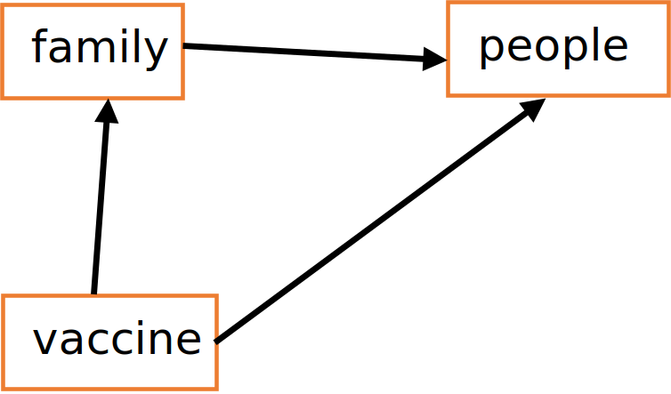
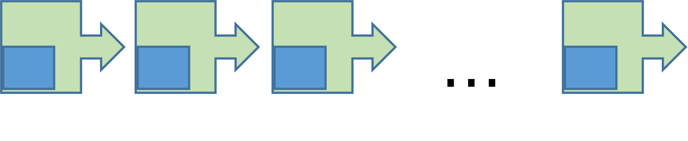
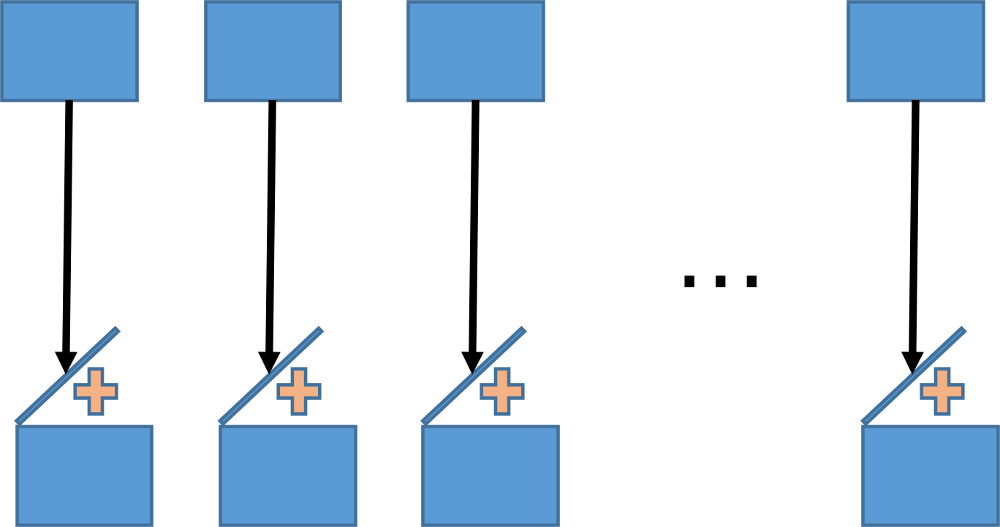
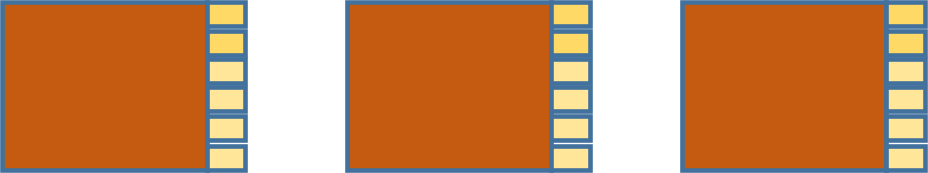
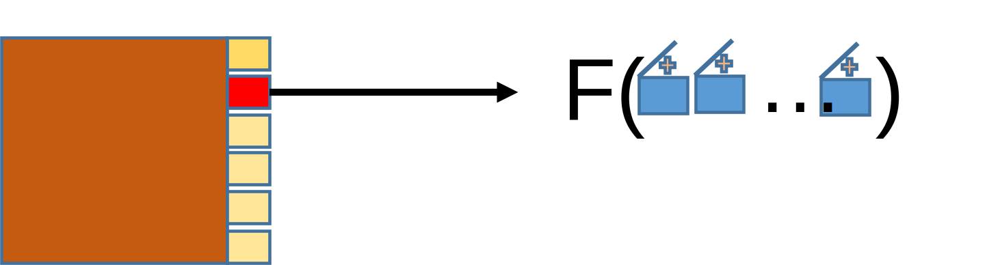
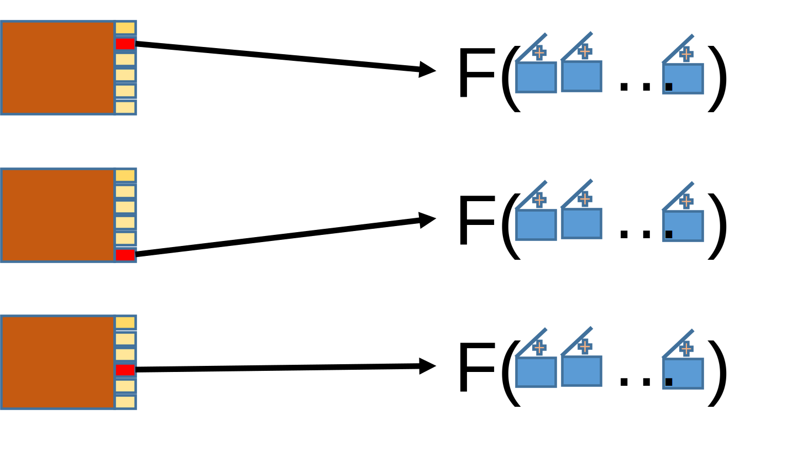
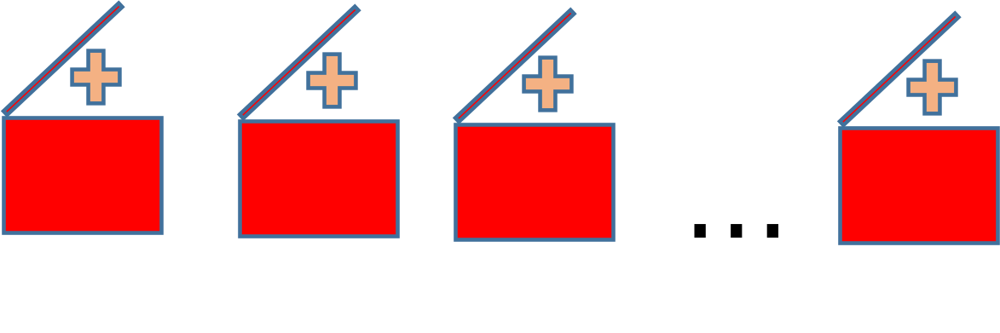
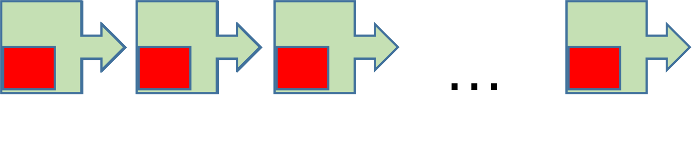

2 Getting Started
We start with a set of practical lessons that will help clarify the core concepts of GCM. The lessons generally build on one another and should be taken in order. You are encouraged to code along with the lessons. The full set of lessons are included in the main code repository as maven-based, standalone Java projects.
2.1 Hello World Lesson (Lesson 1)
Our first lesson is a very reduced “Hello World” example where we will execute the simulation with one line of code.
With this one line we have created and executed a simulation. Since the simulation had no actors or data managers there was nothing to do and so it terminated immediately. Let’s analyze the line in a more drawn out form:
The simulation does not have a constructor. Instead it uses a static builder class that creates the simulation from various arguments. The builder is immediately capable of building a simulation instance so we will skip giving it any more information. The simulation is only capable of executing, so we execute it.
2.2 Plugins Lesson (Lesson 2)
Models are made of plugins. In this lesson(Example2) we will add a single plugin to the simulation and execute it.
Code Block 2.3: A simple plugin added to the simulation. Plugins act as modules for all components contributed to the simulation.
The first thing we will need to do to build a plugin is to identify it. The PluginId is a marker interface – it has no methods and serves to help differentiate between plugin id values and other identifiers. The SimplePluginId is a convenience implementor of PluginId and will wrap any object as an identifier. In this case we use the string “example plugin”, but you are free to implement them however best fits your needs.
Next we build the plugin. The Plugin class implements all plugins and you can provide several arguments to its builder to specify the contents and behavior of your plugin. A plugin is composed of four items:
- An id
- Dependencies on other plugins
- Data objects used to initialize data managers, actors and reports
- An initializer to load the data into the simulation
For now, we will only need to add the plugin id and build the plugin.
Finally, we build the simulation by adding the plugin and then executing as usual. The result is the same as the previous lesson: nothing happens. However, internally, the simulation did add the plugin and found it had no information other than its id.
2.3 Actors Lesson (Lesson 3)
Contexts
In all that follows(Example3), we will encounter various context objects. Contexts are interfaces into the simulation that are tailored to the thing using the context. For example, an ActorContext provides everything that an actor will need to interact with the simulation. Similarly, a DataManager context provides the capabilities needed by data managers.
The first context we encounter is the PluginContext. It provides the plugin with the following abilities:
- Add an actor to the simulation
- Add a data manager to the simulation
- Add a report to the simulation
- Get plugin data
The PluginContext is passed to the plugin’s initializer and is used to add all data managers, all initial data and any actors or reports that need to exist at the beginning of the simulation run.
The next context will be the ActorContext. It provides actors with a wide array of capabilities that we demonstrate later. For now, the important takeaway is that being granted a context implicitly identifies the recipient as having a particular role in the simulation.
Code Block 2.4: An initializer uses a plugin context to execute the initialization logic at the beginning of each simulation.
We are setting the plugin’s initializer. The initializer is a method that consumes a PluginContext and returns void. For this example, we use a static local method for our initializer:
When the simulation starts up its execution, one of the first things it will do is to execute each plugin’s initializer to give the plugin an opportunity to add actors, reports and data managers to the simulation before time and events begin to flow. Adding an actor is done with another consumer, but this time it is a consumer of ActorContext.
Code Block 2.6: The actor prints out some identifying information when it initializes.
After the plugins are initialized, the actors and data managers are next. For this example, the actor is initialized and it prints a few statements and ceases activity. Here is the resulting console output:
|
plugin being initialized – we will add one actor actor being initialized my id = ActorId [id=0] time = 0.0 |
We can replace the local method references above with lamdas to be more succinct.
Code Block 2.7: A single actor writes output to the console during its initialization.
PluginId pluginId = new SimplePluginId("example plugin");
Plugin plugin = Plugin.builder()//
.setPluginId(pluginId)//
.setInitializer(pluginContext -> {
System.out.println("plugin being initialized -- we will add one actor");
pluginContext.addActor(actorContext -> {
System.out.println("actor being initialized");
System.out.println("my id = " + actorContext.getActorId());
System.out.println("time = " + actorContext.getTime());
});
})//
.build();
Simulation.builder()//
.addPlugin(plugin)//
.build()//
.execute();2.4 Data Managers Lesson (Lesson 4)
We extend the previous lesson by slightly altering the actor and adding a data manager. But first let’s list some of the attributes of data managers, actors and reports to better understand the roles they play in the simulation. Reports are presented in detail in a later chapter.
- Data Managers
- Exist for the full duration of the simulation
- Contain and maintain the entire state of the world.
- Are highly stateful
- Produce events in reaction to state changes
- Interact with other data managers via events
- Do not have a set of objectives. They are not trying to achieve some particular state of the world
- Are narrowly focused on some particular aspect of the world, but are concerned with all instances of that aspect
- Are added as instances and are limited to a single instance per class type
- Actors
- May be added and removed over time
- Are not considered to be part of the world
- Are generally stateless
- React to but do not produce events
- May access any data manager
- Have objectives. They contain the business logic of the model and are trying to achieve some particular state of the world
- Are concerned with many aspects of the world, but often focused on a particular subset of world
- Are added as consumers of ActorContext and may be composed of any such consumers
Reports
- Exist for the full duration of the simulation
- Are not considered to be part of the world
- React to but do not produce events
- May access any data manager
- Do not have a set of objectives
- Cannot mutate data and have no effect on the outcome of the simulation
Code Block 2.8: A data manager is added to the simulation.
public static void main(String[] args) {
PluginId pluginId = new SimplePluginId("example plugin");
Plugin plugin = Plugin.builder()//
.setPluginId(pluginId)//
.setInitializer(pluginContext -> {
pluginContext.addActor(new ExampleActor()::init);
pluginContext.addDataManager(new ExampleDataManager());
})//
.build();
Simulation.builder()//
.addPlugin(plugin)//
.build()//
.execute();
}We add an instance of ExampleDataManager to the simulation. Unlike the actor, where we pass a consumer of context, we need to provide an actual instance of a data manager. Note that the ExampleDataManager extends the base class DataManager. The base class provides only the init() method to override and you must include the super.init(dataManagerContext) call as its first line. This is done to ensure that each data manager is initialized exactly once by the simulation.
The ExampleDataManager has two (completely arbitrary) data fields alpha and beta and provides both getters and setters for each.
Code Block 2.9: The example data manager manages the state of two properties and prints to the console when changes are made.
public final class ExampleDataManager extends DataManager {
private int alpha = 7;
private double beta = 1.2345;
private DataManagerContext dataManagerContext;
@Override
public void init(DataManagerContext dataManagerContext) {
super.init(dataManagerContext);
this.dataManagerContext = dataManagerContext;
System.out.println("ExampleDataManager is initialized");
}
public int getAlpha() {
return alpha;
}
public void setAlpha(int alpha) {
this.alpha = alpha;
System.out.println("ExampleDataManager sets alpha = " + alpha + " at time = " + dataManagerContext.getTime());
}
public double getBeta() {
return beta;
}
public void setBeta(double beta) {
this.beta = beta;
System.out.println("ExampleDataManager sets beta = " + beta + " at time = " + dataManagerContext.getTime());
}
}The actor is now specified via the ExampleActor class, Code Block 2.10. Most actors contain enough code that we usually put that code into a separate class rather than a lambda statement as we did in the previous lesson. Note that the init() method has the correct method signature of being a consumer of ActorContext.
Plans
In GCM, an actor can do three things:
- Observe: Observation can be done directly by gaining access to a data manager and then getting a value from that data manager. Observation can be done indirectly by subscribing to events. We will cover that option later.
- Act: A mutation to some data manager’s managed data.
- Plan: At some time in the future, the actor will take some particular action
Actions in GCM are always executed in the current moment in the simulation. Unlike many future event simulations where events are queued for future execution, GCM allows an actor to plan for an action or observation in the future. The plan is a consumer of ActorContext and can be a static method, member method or a lambda. The plan is registered with the simulation and is executed only when time has moved forward to the plan’s scheduled time. There is no requirement that the plan do anything at all. This allows the flexibility to re-evaluate the circumstances of the planned action and choose to take appropriate action at that time. Plans are queued in GCM by their associated planning times and it is this queue that dictates the flow of time. For example, suppose the simulation finds the first plan is scheduled for time= 2.4 days. The current time = 0 days and the simulation progresses time to 2.4 days and then invokes the plan. Plans are always privately managed by the actor that owns the plan and no other actor or data manager has any insight into those plans.
In this example, the actor is initialized at time= 0 and generates 10 plans to increment the value of the alpha in the ExampleManager. Each time the ExampleManager changes the value of alpha, it outputs to the console a description of the change.
Code Block 2.10: The example actor initializes by making plans to update the alpha property on a daily basis.
public final class ExampleActor {
public void init(ActorContext actorContext) {
System.out.println("Example Actor is initialized and will plan to set Alpha");
ExampleDataManager exampleDataManager = actorContext.getDataManager(ExampleDataManager.class);
for (double planTime = 0; planTime < 10; planTime++) {
actorContext.addPlan((context) -> {
int alpha = exampleDataManager.getAlpha();
alpha++;
exampleDataManager.setAlpha(alpha);
}, planTime);
}
}
}The output from the simulation is:
|
ExampleDataManager is initialized Example Actor is initialized and will plan to set Alpha ExampleDataManager sets alpha = 8 at time = 0.0 ExampleDataManager sets alpha = 9 at time = 1.0 ExampleDataManager sets alpha = 10 at time = 2.0 ExampleDataManager sets alpha = 11 at time = 3.0 ExampleDataManager sets alpha = 12 at time = 4.0 ExampleDataManager sets alpha = 13 at time = 5.0 ExampleDataManager sets alpha = 14 at time = 6.0 ExampleDataManager sets alpha = 15 at time = 7.0 ExampleDataManager sets alpha = 16 at time = 8.0 ExampleDataManager sets alpha = 17 at time = 9.0 |
2.5 Events Lesson (Lesson 5)
An event in GCM is a notification of a data change to the state of a data manager. In this example we will introduce two events corresponding to the two changes to the ExampleDataManager. Both events document the previous value and current value (at the time when the event was generated) and are immutable data classes.
Code Block 2.11: An event to notify that the alpha property has been updated.
public final class AlphaChangeEvent implements Event {
private final int previousAlpha;
private final int currentAlpha;
public AlphaChangeEvent(int previousAlpha, int currentAlpha) {
super();
this.previousAlpha = previousAlpha;
this.currentAlpha = currentAlpha;
}
public int getPreviousAlpha() {
return previousAlpha;
}
public int getCurrentAlpha() {
return currentAlpha;
}
@Override
public String toString() {
StringBuilder builder = new StringBuilder();
builder.append("AlphaChangeEvent [previousAlpha=");
builder.append(previousAlpha);
builder.append(", currentAlpha=");
builder.append(currentAlpha);
builder.append("]");
return builder.toString();
}
}Code Block 2.12: An event to notify that the beta property has been updated.
public final class BetaChangeEvent implements Event {
private final double previousBeta;
private final double currentBeta;
public BetaChangeEvent(double previousBeta, double currentBeta) {
super();
this.previousBeta = previousBeta;
this.currentBeta = currentBeta;
}
public double getPreviousBeta() {
return previousBeta;
}
public double getCurrentBeta() {
return currentBeta;
}
@Override
public String toString() {
StringBuilder builder = new StringBuilder();
builder.append("BetaChangeEvent [previousBeta=");
builder.append(previousBeta);
builder.append(", currentBeta=");
builder.append(currentBeta);
builder.append("]");
return builder.toString();
}
}Each is generated by the ExampleDataManager, Code Block 2.13, when the alpha or beta values are mutated by releasing the events through the DataManagerContext to the simulation:
Code Block 2.13: The alpha and beta updates are managed via private mutation events.
private static record AlphaChangeMutationEvent(int alpha) implements Event {
}
public void setAlpha(int alpha) {
dataManagerContext.releaseMutationEvent(new AlphaChangeMutationEvent(alpha));
}
private void handleAlphaChangeMutationEvent(DataManagerContext dataManagerContext,
AlphaChangeMutationEvent alphaChangeMutationEvent) {
int alpha = alphaChangeMutationEvent.alpha();
int previousValue = this.alpha;
this.alpha = alpha;
dataManagerContext.releaseObservationEvent(new AlphaChangeEvent(previousValue, this.alpha));
}
private static record BetaChangeMutationEvent(double beta) implements Event {
}
public void setBeta(double beta) {
dataManagerContext.releaseMutationEvent(new BetaChangeMutationEvent(beta));
}
private void handleBetaChangeMutationEvent(DataManagerContext dataManagerContext,
BetaChangeMutationEvent betaChangeMutationEvent) {
double beta = betaChangeMutationEvent.beta();
double previousValue = this.beta;
this.beta = beta;
dataManagerContext.releaseObservationEvent(new BetaChangeEvent(previousValue, this.beta));
}There are three actors in this example:
Actor1 makes changes to both the alpha and beta values at 1 and 3.5 day intervals respectively.
Actor2 subscribes to AlphaChangeEvent events and reports to console what it receives.
Actor3 does the same for BetaChangeEvent events
Code Block 2.14: Actor 1 schedules updates to both the alpha and beta properties.
public final class Actor1 {
public void init(ActorContext actorContext) {
ExampleDataManager exampleDataManager = actorContext.getDataManager(ExampleDataManager.class);
for (double planTime = 1; planTime <= 10; planTime++) {
actorContext.addPlan((context) -> {
int alpha = exampleDataManager.getAlpha();
alpha++;
exampleDataManager.setAlpha(alpha);
}, planTime);
}
for (int i = 1; i <= 5; i++) {
double planTime = i * 3.5;
actorContext.addPlan((context) -> {
double beta = exampleDataManager.getBeta();
beta *= 2;
exampleDataManager.setBeta(beta);
}, planTime);
}
}
}Code Block 2.15: Actor 2 reacts to changes in the alpha property.
public final class Actor2 {
public void init(ActorContext actorContext) {
EventFilter<AlphaChangeEvent> eventFilter = EventFilter.builder(AlphaChangeEvent.class).build();
actorContext.subscribe(eventFilter, (context, event) -> {
System.out.println("Actor2 observes event " + event + " at time = " + context.getTime());
});
}
}Code Block 2.16: Actor 3 reacts to changes in the beta property.
public final class Actor3 {
public void init(ActorContext actorContext) {
EventFilter<BetaChangeEvent> eventFilter = EventFilter.builder(BetaChangeEvent.class).build();
actorContext.subscribe(eventFilter, (context, event) -> {
System.out.println("Actor3 observes event " + event + " at time = " + context.getTime());
});
}
}The resulting console output shows Actor2 and Actor3 observing the expected events at the expected times:
|
Actor2 observes event AlphaChangeEvent [previousAlpha=7, currentAlpha=8] at time = 1.0 Actor2 observes event AlphaChangeEvent [previousAlpha=8, currentAlpha=9] at time = 2.0 Actor2 observes event AlphaChangeEvent [previousAlpha=9, currentAlpha=10] at time = 3.0 Actor3 observes event BetaChangeEvent [previousBeta=1.2345, currentBeta=2.469] at time = 3.5 Actor2 observes event AlphaChangeEvent [previousAlpha=10, currentAlpha=11] at time = 4.0 Actor2 observes event AlphaChangeEvent [previousAlpha=11, currentAlpha=12] at time = 5.0 Actor2 observes event AlphaChangeEvent [previousAlpha=12, currentAlpha=13] at time = 6.0 Actor2 observes event AlphaChangeEvent [previousAlpha=13, currentAlpha=14] at time = 7.0 Actor3 observes event BetaChangeEvent [previousBeta=2.469, currentBeta=4.938] at time = 7.0 Actor2 observes event AlphaChangeEvent [previousAlpha=14, currentAlpha=15] at time = 8.0 Actor2 observes event AlphaChangeEvent [previousAlpha=15, currentAlpha=16] at time = 9.0 Actor2 observes event AlphaChangeEvent [previousAlpha=16, currentAlpha=17] at time = 10.0 Actor3 observes event BetaChangeEvent [previousBeta=4.938, currentBeta=9.876] at time = 10.5 Actor3 observes event BetaChangeEvent [previousBeta=9.876, currentBeta=19.752] at time = 14.0 Actor3 observes event BetaChangeEvent [previousBeta=19.752, currentBeta=39.504] at time = 17.5 |
Event Filters
Subscription to events for data managers and actors differ a bit. Data managers subscribe directly to the event type since they are generally interested in all events of some given type. Actors are often more selective and would like a predicate (in Java, the predicate is a function that returns a Boolean) to return true before they handle an event. For example, an actor wants to subscribe for person property change events, but is only interested in those events indicate a change to a particular person property. Since there will likely be dozens of person properties, the actor would get stimulated many times over, only to ignore the event most of the time. Unfortunately, a simple predicate added during the subscription process will not suffice since that predicate would have to be executed for each event and we will have gained little efficiency. Instead, GCM uses the EventFilter class that is essentially a predicate grouping mechanism that allows the subscription engine to group subscribers into a tree structure so that a single predicate execution might suffice to allow an event to be passed to multiple subscribers.
The event filter is logically composed of functions and target values as pairs. Each function takes in an event and releases a value. If that value is equal to the target value, then the event passes that function. An event passes the event filter if it passes all the functions that compose the filter. The construction of the builder for event filters requires the event class reference. The addition of function-value pairs requires that the functions take in only events of the given class reference, but may return any non-null object value. The simple examples given so far have only specified the event class and thus every event of that type will pass the event filter.
The functions that compose the event filter are often non-meaningfully comparable. For example, two functions that return the same values for every event may be separate instances of lambda code that are logically equal, but are not equal from the point of view of Java. To get around this, each function is associated with an id value and the id and function pair are called an IdentifiableFunction. Two such functions will be equal if and only if their ids are equal without regard to what their functions actually do. Thus is it very important that the mapping of id to actual logical function be stable and the usual best practice is to manage that mapping in a curated manner via the data manager that is associated with the plugin that defines the event. As we examine plugins that define events, we will encounter event filters that are managed by data managers and we will generally not generate event filters directly in the actor code.
2.6 Plugin Dependencies Lesson (Lesson 6)
So far we have covered what actors and data managers do and that they are introduced into the simulation via plugins. Over the next lessons we take a closer look at the plugins. This lesson starts with creating a more realistic set of plugins arranged into separate java packages.
- People plugin
- Defines a person id
- Adds the PersonDataManager for tracking people
- Adds events for the the addition and removal of people
- Family Plugin
- Defines a family id
- Adds the FamilyDataManager for grouping people into families
- Vaccine Plugin
- Adds the VaccineDataManager for tracking which people have been vaccinated
- Model Plugin
- Contains the ModelActor class to add people organized into family structures and vaccinate some of those people
Here are the classes that implement this example:
People Plugin:
The people plugin defines a PersonId as a simple, immutable wrapper to an int value. The PersonDataManager tracks people via PersonId values and allows for the addition and removal of people. PersonId values are generated in order and never reused. Events are generated when people are added or removed.
Code Block 2.17: The PersonId class defines people and wraps an int value.
public final class PersonId implements Comparable<PersonId> {
private final int id;
public PersonId(int id) {
this.id = id;
}
public int getValue() {
return id;
}
@Override
public int compareTo(PersonId personId) {
return Integer.compare(id, personId.id);
}
@Override
public int hashCode() {
return id;
}
@Override
public boolean equals(Object obj) {
if (this == obj) {
return true;
}
if (!(obj instanceof PersonId)) {
return false;
}
PersonId other = (PersonId) obj;
if (id != other.id) {
return false;
}
return true;
}
@Override
public String toString() {
return Integer.toString(id);
}
}Code Block 2.18: The PersonDataManager manages people by adding people, removing people and releasing person removal events.
public final class PersonDataManager extends DataManager {
private int masterPersonId;
private Set<PersonId> people = new LinkedHashSet<>();
private DataManagerContext dataManagerContext;
@Override
public void init(DataManagerContext dataManagerContext) {
super.init(dataManagerContext);
this.dataManagerContext = dataManagerContext;
dataManagerContext.subscribe(PersonRemovalMutationEvent.class, this::handlePersonRemovalMutationEvent);
}
public PersonId addPerson() {
PersonId personId = new PersonId(masterPersonId++);
people.add(personId);
return personId;
}
public boolean personExists(PersonId personId) {
return people.contains(personId);
}
public Set<PersonId> getPeople() {
return new LinkedHashSet<>(people);
}
private static record PersonRemovalMutationEvent(PersonId personId) implements Event {
}
public void removePerson(PersonId personId) {
dataManagerContext.releaseMutationEvent(new PersonRemovalMutationEvent(personId));
}
private void handlePersonRemovalMutationEvent(DataManagerContext dataManagerContext,
PersonRemovalMutationEvent personRemovalMutationEvent) {
PersonId personId = personRemovalMutationEvent.personId();
if (!personExists(personId)) {
throw new RuntimeException("person " + personId + " does not exist");
}
people.remove(personId);
dataManagerContext.releaseObservationEvent(new PersonRemovalEvent(personId));
}
}Code Block 2.19: An event signifying that a person has been removed from the simulation.
Family Plugin
The family plugin defines a FamilyId as a simple, immutable wrapper to an int value. The FamilyDataManager tracks family membership via two-way mappings of PersonId to FamilyId. In this example, families can only be added and people can only be added to families. However, people can be removed via the PeoplePlugin so the FamilyDataManager subscribes to PersonRemovalEvent(s) and thus removes the people from families.
Code Block 2.20: The family id, like the person id, simply wraps an int.
public final class FamilyId implements Comparable<FamilyId> {
private final int id;
public FamilyId(int id) {
this.id = id;
}
public int getValue() {
return id;
}
@Override
public int compareTo(FamilyId familyId) {
return Integer.compare(id, familyId.id);
}
@Override
public int hashCode() {
return id;
}
@Override
public boolean equals(Object obj) {
if (this == obj) {
return true;
}
if (!(obj instanceof FamilyId)) {
return false;
}
FamilyId other = (FamilyId) obj;
if (id != other.id) {
return false;
}
return true;
}
@Override
public String toString() {
return Integer.toString(id);
}
}Code Block 2.21: The family data manager manages families, their person members and various information methods.
public final class FamilyDataManager extends DataManager {
private int masterFamilyId;
private Map<FamilyId, Set<PersonId>> familyMap = new LinkedHashMap<>();
private Map<PersonId, FamilyId> personMap = new LinkedHashMap<>();
private PersonDataManager personDataManager;
@Override
public void init(DataManagerContext dataManagerContext) {
super.init(dataManagerContext);
personDataManager = dataManagerContext.getDataManager(PersonDataManager.class);
dataManagerContext.subscribe(PersonRemovalEvent.class, this::handlePersonRemovalEvent);
}
private void handlePersonRemovalEvent(DataManagerContext dataManagerContext,
PersonRemovalEvent personRemovalEvent) {
PersonId personId = personRemovalEvent.getPersonId();
FamilyId familyId = personMap.remove(personId);
if (familyId != null) {
familyMap.get(familyId).remove(personId);
}
System.out.println(
"Family Data Manager is removing person " + personId + " at time = " + dataManagerContext.getTime());
}
public FamilyId addFamily() {
FamilyId familyId = new FamilyId(masterFamilyId++);
familyMap.put(familyId, new LinkedHashSet<>());
return familyId;
}
public boolean familyExists(FamilyId familyId) {
return familyMap.keySet().contains(familyId);
}
public List<PersonId> getFamilyMembers(FamilyId familyId) {
if (!familyExists(familyId)) {
throw new RuntimeException("unknown family " + familyId);
}
return new ArrayList<>(familyMap.get(familyId));
}
public Optional<FamilyId> getFamilyId(PersonId personId) {
if (!personDataManager.personExists(personId)) {
throw new RuntimeException("unknown person " + personId);
}
FamilyId familyId = personMap.get(personId);
return Optional.ofNullable(familyId);
}
public void addFamilyMember(PersonId personId, FamilyId familyId) {
if (!personDataManager.personExists(personId)) {
throw new RuntimeException("unknown person " + personId);
}
if (!familyExists(familyId)) {
throw new RuntimeException("unknown family " + familyId);
}
FamilyId currentFamilyId = personMap.get(personId);
if (currentFamilyId != null) {
throw new RuntimeException("person " + personId + " is already assigned to family " + currentFamilyId);
}
familyMap.get(familyId).add(personId);
personMap.put(personId, familyId);
}
}Vaccine Plugin
The vaccine plugin contains only the VaccineDataManager which tracks by PersonId which people have been vaccinated. Like the FamilyDataManager, it too subscribes to PersonRemovalEvent(s) and adjusts its data accordingly.
Code Block 2.22: The vaccination manager tracks the vaccination status of each person, reacting to the person removal as needed.
public final class VaccinationDataManager extends DataManager {
private Set<PersonId> vaccinatedPeople = new LinkedHashSet<>();
private PersonDataManager personDataManager;
@Override
public void init(DataManagerContext dataManagerContext) {
super.init(dataManagerContext);
dataManagerContext.subscribe(PersonRemovalEvent.class, this::handlePersonRemovalEvent);
personDataManager = dataManagerContext.getDataManager(PersonDataManager.class);
}
private void handlePersonRemovalEvent(DataManagerContext dataManagerContext,
PersonRemovalEvent personRemovalEvent) {
PersonId personId = personRemovalEvent.getPersonId();
vaccinatedPeople.remove(personId);
System.out.println("Vaccination Data Manager is removing person " + personId + " at time = "
+ dataManagerContext.getTime());
}
public Set<PersonId> getVaccinatedPeople() {
return new LinkedHashSet<>(vaccinatedPeople);
}
public Set<PersonId> getUnvaccinatedPeople() {
Set<PersonId> people = personDataManager.getPeople();
people.removeAll(vaccinatedPeople);
return people;
}
public boolean isPersonVaccinated(PersonId personId) {
if (!personDataManager.personExists(personId)) {
throw new RuntimeException("unknown person " + personId);
}
return vaccinatedPeople.contains(personId);
}
public void vaccinatePerson(PersonId personId) {
if (!personDataManager.personExists(personId)) {
throw new RuntimeException("unknown person " + personId);
}
vaccinatedPeople.add(personId);
}
}Model Plugin
The model plugin contains a single actor, the ModelActor, that serves to:
- Add people to the simulation
- Group them into families
- Vaccinate some people
- Demonstrate that events cascade
Connecting the Plugins
Both the family and vaccine plugins depend on the concept of a person as implemented by the PersonId class. They also need to respond when a person is removed from the simulation and do so by handling the corresponding PersonRemovalEvent generated by the person plugin. We build these dependencies via the Plugin.Builder class in the example code below.
Code Block 2.23: The people, vaccine, family and model plugins are contributed to the simulation. On execution, the model plugin’s single actor schedules the vaccination of each person as well as a few random removals of people from the simulation.
public static void main(String[] args) {
PluginId peoplePluginId = new SimplePluginId("people plugin");
Plugin peoplePlugin = Plugin.builder()//
.setPluginId(peoplePluginId)//
.setInitializer(pluginContext -> {
pluginContext.addDataManager(new PersonDataManager());
})//
.build();
PluginId vaccinePluginId = new SimplePluginId("vaccine plugin");
Plugin vaccinePlugin = Plugin.builder()//
.setPluginId(vaccinePluginId)//
.addPluginDependency(peoplePluginId)//
.setInitializer(pluginContext -> {
pluginContext.addDataManager(new VaccinationDataManager());
})//
.build();
PluginId familyPluginId = new SimplePluginId("family plugin");
Plugin familyPlugin = Plugin.builder()//
.setPluginId(familyPluginId)//
.addPluginDependency(peoplePluginId)//
.setInitializer(pluginContext -> {
pluginContext.addDataManager(new FamilyDataManager());
})//
.build();
PluginId modelPluginId = new SimplePluginId("model plugin");
Plugin modelPlugin = Plugin.builder()//
.setPluginId(modelPluginId)//
.setInitializer(pluginContext -> {
pluginContext.addActor(new ModelActor()::init);
})//
.build();
Simulation.builder()//
.addPlugin(vaccinePlugin)//
.addPlugin(familyPlugin)//
.addPlugin(peoplePlugin)//
.addPlugin(modelPlugin)//
.build()//
.execute();
}Note the addition of the dependency on the people plugin via its id when adding both the vaccine and family plugins. The order of addition of the plugins to the simulation is relatively unimportant as is ordering in general in any of the builder patterns used in GCM.
The resulting output:
|
Person 7 was vaccinated at time = 1.0 Person 2 was vaccinated at time = 2.0 Person 5 was vaccinated at time = 3.0 Vaccination Data Manager is removing person 2 at time = 3.0 Family Data Manager is removing person 2 at time = 3.0 Person 6 was vaccinated at time = 4.0 Vaccination Data Manager is removing person 1 at time = 4.0 Family Data Manager is removing person 1 at time = 4.0 Person 3 was vaccinated at time = 5.0 Vaccination Data Manager is removing person 8 at time = 5.0 Family Data Manager is removing person 8 at time = 5.0 Failed to vaccinate Person 1 at time = 6.0 Vaccination Data Manager is removing person 6 at time = 6.0 Family Data Manager is removing person 6 at time = 6.0 Person 0 was vaccinated at time = 7.0 Vaccination Data Manager is removing person 7 at time = 7.0 Family Data Manager is removing person 7 at time = 7.0 Person 9 was vaccinated at time = 8.0 Vaccination Data Manager is removing person 5 at time = 8.0 Family Data Manager is removing person 5 at time = 8.0 Failed to vaccinate Person 8 at time = 9.0 Vaccination Data Manager is removing person 3 at time = 9.0 Family Data Manager is removing person 3 at time = 9.0 Person 4 was vaccinated at time = 10.0 Vaccination Data Manager is removing person 4 at time = 10.0 Family Data Manager is removing person 4 at time = 10.0 Vaccination Data Manager is removing person 0 at time = 11.0 Family Data Manager is removing person 0 at time = 11.0 Vaccination Data Manager is removing person 9 at time = 12.0 Family Data Manager is removing person 9 at time = 12.0 |
2.7 Plugin Dependency Graph Lesson (Lesson 7)
We extend the previous lesson by adding an additional dependency of the vaccine plugin on the family plugin. This will allow the VaccineDataManager to answer queries about which members of a family have yet to be vaccinated.
From the VaccineDataManager:
Code Block 2.24: By adding a plugin dependencies on the people and family plugins, the vaccine data manager can now answer questions about the vaccine status of family members
public List<PersonId> getUnvaccinatedFamilyMembers(PersonId personId) {
if (!personDataManager.personExists(personId)) {
throw new RuntimeException("unknown person " + personId);
}
List<PersonId> result = new ArrayList<>();
Optional<FamilyId> optional = familyDataManager.getFamilyId(personId);
if (optional.isPresent()) {
FamilyId familyId = optional.get();
List<PersonId> familyMembers = familyDataManager.getFamilyMembers(familyId);
for (PersonId familyMemeberId : familyMembers) {
if (!isPersonVaccinated(familyMemeberId)) {
result.add(personId);
}
}
}
return result;
}The plugins in this example form a dependency pattern:

All plugin dependencies in GCM form similar directed, acyclic graphs (DAGs). There can be no loops in the dependency graph, but the graph does not have to be fully connected. The dependencies reflect the requirements of the data managers within a plugin to access data managers in other plugins. This pattern drives the order in which events are presented to data managers. This way, a data manager is guaranteed that any event that it is processing has already been fully processed by all the data managers it depends on.
In this lesson, the VaccineDataManager and the FamilyDataManager have both subscribed to the PersonRemovalEvent generated by the PersonDataManager. Since the VaccineDataManager also has a dependency on the FamilyDataManager, the VaccineDataManager should receive the event after the FamilyDataManager. Events cascade through the subscribed data managers in an order that is consistent with the plugin dependency DAG.
2.8 Plugin Data Lesson (Lesson 8)
The Example code in the last lesson was a bit verbose and can be improved. Identifying and generating the plugins can be included in the plugin packages by introducing classes for each id and classes for each plugin’s contents. In the disease package we add a unique plugin identifier with a final static id field:
We also add a static class (DiseasePlugin) that implements the construction of the plugin from the required plugin data.
Code Block 2.26: The DiseasePlugin class is a static class for creating the disease plugin.
public final class DiseasePlugin {
private DiseasePlugin() {
}
public static Plugin getDiseasePlugin(DiseasePluginData diseasePluginData) {
return Plugin.builder()//
.addPluginData(diseasePluginData)//
.setPluginId(DiseasePluginId.PLUGIN_ID)//
.setInitializer((pluginContext) -> {
DiseasePluginData pluginData = pluginContext.getPluginData(DiseasePluginData.class).get();
pluginContext.addDataManager(new DiseaseDataManager(pluginData));
})//
.build();
}
}The plugin is initialized with a DiseasePluginData object that contains the initial values for r0, asymptomatic days and symptomatic days. Most plugins will have a single plugin data object, but some may not need any and some may be designed with multiple such classes. All such classes must implement the PluginData interface:
Code Block 2.27: The PluginData interface indicates that its implementors are immutable. Plugin data objects are shared between all simulation instances and thus must be thread safe. It introduces a single method used to copy plugin datas during the experiment process.
@ThreadSafe
public interface PluginData {
/**
* Returns a PluginDataBuilder that can build the plugin data. The returned
* builder should be initialized with this plugin data object's internal state
* such that invocation of pluginData.getCloneBuilder().build() will generate a
* copy of the current plugin.
*/
public PluginDataBuilder getCloneBuilder();
@Override
public int hashCode();
/**
* Plugin datas are equal if they are implicitly equal. They contain the same
* implicit information without regard to order.
*/
@Override
public boolean equals(Object obj);
/**
* A string representation of the plugin data implicit data and reflects the
* order of addition of the data. Equal plugin datas have equal strings in terms
* of content, but not necessarily order.
*/
@Override
public String toString();
}Plugin data classes must be threadsafe since they will be shared between multiple simulations running on separate threads. This stands in contrast to the actors and data managers which are created and managed in the thread of a single simulation. The best practice is to make plugin data classes immutable since immutable classes in Java are guaranteed to be threadsafe. For a class to be immutable in Java it must meet three conditions:
- It cannot be mutated, i.e. it has no setters and no public fields.
- All its fields are marked final.
- Its constructor(s) do not pass reference to self. No reference to the newly created object leaks out before construction is complete.
Besides carrying whatever data is needed by the plugin, the PluginData implementor must provide a PluginDataBuilder:
The role of the plugin data builder will be explored in the next lesson where it will be used to make alterable copies of plugin data to drive the experiment. For now, let’s examine the DiseasePluginData class. It is composed several sections:
- A data class
- A static builder class
- A single data field and private constructor
- Getter methods for the data
- A clone builder method
Code Block 2.29: The disease plugin data collects the various general disease properties used to initialize the disease data manager.
The Data class is private and just contains the fields needed by the plugin. Note that it is a mutable class and that its fields are not final. It will be used by the builder class later to store values. Its constructors are private and allow one Data object to be copied from another.
Code Block 2.30: The builder class for the immutable disease plugin data class.
public static class Builder implements PluginDataBuilder {
private Data data;
private Builder(final Data data) {
this.data = data;
}
@Override
public DiseasePluginData build() {
return new DiseasePluginData(new Data(data));
}
public Builder setAsymptomaticDays(final double asymptomaticDays) {
data.asymptomaticDays = asymptomaticDays;
return this;
}
public Builder setR0(final double r0) {
data.r0 = r0;
return this;
}
public Builder setSymptomaticDays(final double symptomaticDays) {
data.symptomaticDays = symptomaticDays;
return this;
}
}
public static Builder builder() {
return new Builder(new Data());
}The static builder class is used instead of a constructor. The use of builder classes for plugin data objects is key to the creation of experiments covered in the next lesson. For now, let’s concentrate on what the builder does. First, it has setter methods for each of the data fields and each such method returns the builder instance to support method chaining. Next, the build() method returns the DiseasePluginData. Finally, the builder’s own constructor is private and is accessed via a static method. This is done to grant a syntax that is more compatible with the method chaining.
After the builder collects the data, it passes that data to the instance of the DiseasePluginData which is stored as a final field. Recall that the field must be final in an immutable class.
The getter methods for each field value in the data are added. There are no corresponding setter methods.
We end the class with the getCloneBuilder method.
Our use of the term clone is intuitive but may cause some confusion. What we are doing is copying the data in the DiseasePluginData and placing into a builder so that it can be further mutated later in the experiment. Java formally defines the term clone as a part of the Object class definition and implements it with a protected method clone(). Use of the Object.clone() method has generally fallen out of favor in Java but still has some proponents/use cases.
The method returns a new Builder that has reference to the current data object. The resulting example class is easier to read and more succinct:
Code Block 2.34: Example 8 executes more succinctly by use of static plugin classes.
public final class Example_8 {
private Example_8() {
}
private static DiseasePluginData getDiseasePluginData() {
return DiseasePluginData.builder()//
.setR0(1.5)//
.setAsymptomaticDays(4.0)//
.setSymptomaticDays(12.0)//
.build();
}
private static PolicyPluginData getPolicyPluginData() {
return PolicyPluginData.builder()//
.setDistributeVaccineLocally(true)//
.setSchoolClosingInfectionRate(0.05)//
.build();
}
public static void main(String[] args) {
DiseasePluginData diseasePluginData = getDiseasePluginData();
Plugin diseasePlugin = DiseasePlugin.getDiseasePlugin(diseasePluginData);
PolicyPluginData policyPluginData = getPolicyPluginData();
Plugin policyPlugin = PolicyPlugin.getPolicyPlugin(policyPluginData);
Plugin modelPlugin = ModelPlugin.getModelPlugin();
Simulation.builder()//
.addPlugin(diseasePlugin)//
.addPlugin(modelPlugin)//
.addPlugin(policyPlugin)//
.build()//
.execute();
}
}2.9 Experiments Lesson (Lesson 9)
So far we have mentioned that the plugin data classes play a role in executing an experiment via the getCloneBuilder method. Let’s start with the simple experiment. We will update the last example class by replacing the Simulation execution with an Experiment execution:
Code Block 2.35: Example 9 replaces Example 8’s use of the simulation with an experiment.
public final class Example_9_A {
private Example_9_A() {
}
private static DiseasePluginData getDiseasePluginData() {
return DiseasePluginData.builder()//
.setR0(1.5)//
.setAsymptomaticDays(4.0)//
.setSymptomaticDays(12.0)//
.build();
}
private static PolicyPluginData getPolicyPluginData() {
return PolicyPluginData.builder()//
.setDistributeVaccineLocally(true)//
.setSchoolClosingInfectionRate(0.05)//
.build();
}
public static void main(String[] args) {
DiseasePluginData diseasePluginData = getDiseasePluginData();
Plugin diseasePlugin = DiseasePlugin.getDiseasePlugin(diseasePluginData);
PolicyPluginData policyPluginData = getPolicyPluginData();
Plugin policyPlugin = PolicyPlugin.getPolicyPlugin(policyPluginData);
Plugin modelPlugin = ModelPlugin.getModelPlugin();
Experiment.builder()//
.addPlugin(diseasePlugin)//
.addPlugin(modelPlugin)//
.addPlugin(policyPlugin)//
.addExperimentContextConsumer(ExperimentStatusConsole.builder().build())//
.build()//
.execute();
}
}The experiment class has a very similar builder to the Simulation class so we only have to swap out the Simulation reference for an Experiment reference. The resulting execution created an experiment containing exactly one simulation that runs in the main thread. However, the output contains information about the status of the experiment.
|
Model Actor initializing r0 = 1.5 asymptomatic days = 4.0 symptomatic days = 12.0 school closing infection rate = 0.05 distribute vaccine locally = true 1 of 1 scenario, 100% complete. Expected experiment completion in 0:00:00 Experiment completion of 1 scenario in 0:00:00: SUCCEDED : 1 end of experiment status console |
What happens when the experiment executes?
You have contributed several plugins to the experiment and on execution the experiment generates multiple simulation runs on multiple threads. Let’s examine how this is accomplished as a way to motivate this lesson’s code examples.
The experiment is composed of several plugins, each with zero to many plugin data objects. For purposes of the diagrams we will assume that each plugin has a single plugin data object.

The experiment gathers the plugin data objects and gets the plugin data builder for each. These plugin data builders will come pre-filled with the data from the original data objects.

By altering the data in these builders, we generate new scenarios for the simulations to execute. GCM manages the instructions to alter the plugin data via Dimensions. Each dimension contains one to many levels.

For example, we may have a dimension that alters the value of alpha from plugin data A and the value of beta from plugin data B. Each level in the dimension will set specific values for alpha and beta via the builders.
::: {#fig-experiments_diagram_dimension_levels_example2 .figure fig-cap=“Example levels in a dimension”}
| level | alpha | beta |
|---|---|---|
| 0 | 2.3 | FALSE |
| 1 | 3.6 | TRUE |
| 2 | 4.8 | FALSE |
Each level in a dimension is actually a function that takes in the builders and manipulates the content of each plugin as needed.

Consider an experiment with two dimensions having 3 and 5 levels respectively. The number of level permutations is 3x5 = 15. Each such permutation is referred to as a scenario and the scenarios are numbered from 0 to 14. As the experiment executes, it works with each scenario id and determines for that id which levels are active for each dimension.

Each level (via its function) alters the contents of the builders in turn, resulting in a unique set of content for that scenario.

The builders are then instructed by the experiment to build the plugin data objects. The resulting data objects are inserted into copies of the original plugins to produce a unique set of altered plugins that are specific to the scenario id and executed via a single simulation instance.

You may have noticed that the initializer code above acquires the DiseasePluginData via the context rather than the instance passed to the getDiseasePlugin() method. This is a necessity due to experiment design and will be covered in the lessons that follow. In general, the initializer code should always retrieve plugin data from the plugin context.
We expand the example by adding a single dimension that sets r0 to two values, generating two simulations.
Code Block 2.36: Example 9 B introduces a single dimension that sets the R0 value of the disease plugin data to two values.
public static void main(String[] args) {
DiseasePluginData diseasePluginData = getDiseasePluginData();
Plugin diseasePlugin = DiseasePlugin.getDiseasePlugin(diseasePluginData);
PolicyPluginData policyPluginData = getPolicyPluginData();
Plugin policyPlugin = PolicyPlugin.getPolicyPlugin(policyPluginData);
Plugin modelPlugin = ModelPlugin.getModelPlugin();
Dimension dimension = FunctionalDimension.builder()//
.addLevel((context) -> {
DiseasePluginData.Builder builder = context.getPluginDataBuilder(DiseasePluginData.Builder.class);
double r0 = 2.5;
builder.setR0(r0);
ArrayList<String> result = new ArrayList<>();
result.add(Double.toString(r0));
return result;
})//
.addLevel((context) -> {
DiseasePluginData.Builder builder = context.getPluginDataBuilder(DiseasePluginData.Builder.class);
double r0 = 2.0;
builder.setR0(r0);
ArrayList<String> result = new ArrayList<>();
result.add(Double.toString(r0));
return result;
})//
.addMetaDatum("r0")//
.build();
Experiment.builder()//
.addPlugin(diseasePlugin)//
.addPlugin(modelPlugin)//
.addPlugin(policyPlugin)//
.addDimension(dimension)//
.build()//
.execute();
}In the dimension we see that there are two levels and the addition of some meta data in the addMetaDatum(“r0”) invocation. The meta data here represents the information that each level is altering in the experiment. The main purpose of each level is to alter the state of a builder(s) but must also return meta data values to match the meta data for the dimension. The meta data of the dimension acts as a header to a table while the meta data for each level are the values in that table.
The building of the dimension can be streamlined without typing out each level:
Code Block 2.37: Example 9 C improves on the creation of the R0 dimension.
public final class Example_9_C {
private Example_9_C() {
}
private static DiseasePluginData getDiseasePluginData() {
return DiseasePluginData.builder()//
.setR0(1.5)//
.setAsymptomaticDays(4.0)//
.setSymptomaticDays(12.0)//
.build();
}
private static PolicyPluginData getPolicyPluginData() {
return PolicyPluginData.builder()//
.setDistributeVaccineLocally(true)//
.setSchoolClosingInfectionRate(0.05)//
.build();
}
private static Dimension getDimension() {
FunctionalDimension.Builder builder = FunctionalDimension.builder();//
List<Double> r0Values = new ArrayList<>();
r0Values.add(0.5);
r0Values.add(0.75);
r0Values.add(1.0);
r0Values.add(1.5);
r0Values.add(2.0);
r0Values.add(2.5);
for (Double r0 : r0Values) {
builder.addLevel((context) -> {
DiseasePluginData.Builder pluginDataBuilder = context
.getPluginDataBuilder(DiseasePluginData.Builder.class);
pluginDataBuilder.setR0(r0);
ArrayList<String> result = new ArrayList<>();
result.add(Double.toString(r0));
return result;
});//
}
builder.addMetaDatum("r0");//
return builder.build();
}The resulting experiment execution is more streamlined:
Code Block 2.38: Execution of the experiment is cleaner.
public static void main(String[] args) {
DiseasePluginData diseasePluginData = getDiseasePluginData();
Plugin diseasePlugin = DiseasePlugin.getDiseasePlugin(diseasePluginData);
PolicyPluginData policyPluginData = getPolicyPluginData();
Plugin policyPlugin = PolicyPlugin.getPolicyPlugin(policyPluginData);
Plugin modelPlugin = ModelPlugin.getModelPlugin();
Dimension dimension = getDimension();
Experiment.builder()//
.addPlugin(diseasePlugin)//
.addPlugin(modelPlugin)//
.addPlugin(policyPlugin)//
.addDimension(dimension)//
.build()//
.execute();
}We have turned off the experiment report progress to console in the code above. We have chosen six values for r0 in our dimension and thus we have 6 simulation executions, each having the model actor print out the contents of the DiseaseDataManager:
|
Model Actor initializing r0 = 0.5 asymptomatic days = 4.0 symptomatic days = 12.0 school closing infection rate = 0.05 distribute vaccine locally = true Model Actor initializing r0 = 0.75 asymptomatic days = 4.0 symptomatic days = 12.0 school closing infection rate = 0.05 distribute vaccine locally = true Model Actor initializing r0 = 1.0 asymptomatic days = 4.0 symptomatic days = 12.0 school closing infection rate = 0.05 distribute vaccine locally = true Model Actor initializing r0 = 1.5 asymptomatic days = 4.0 symptomatic days = 12.0 school closing infection rate = 0.05 distribute vaccine locally = true Model Actor initializing r0 = 2.0 asymptomatic days = 4.0 symptomatic days = 12.0 school closing infection rate = 0.05 distribute vaccine locally = true Model Actor initializing r0 = 2.5 asymptomatic days = 4.0 symptomatic days = 12.0 school closing infection rate = 0.05 distribute vaccine locally = true |
We are extending the example again, reducing the r0 dimension to just three levels and introducing a dimension over the policy data. This new dimension has four levels controlling local vaccine distribution and school closing infection rates:
Code Block 2.39: A dimension representing school related policies is added. Note that this dimension has four levels and covers two policies.
private static Dimension getPolicyDimension() {
FunctionalDimension.Builder builder = FunctionalDimension.builder();//
List<Double> schoolClosingInfectionRates = new ArrayList<>();
schoolClosingInfectionRates.add(0.05);
schoolClosingInfectionRates.add(0.10);
List<Boolean> localVaccineDistributionValues = new ArrayList<>();
localVaccineDistributionValues.add(false);
localVaccineDistributionValues.add(true);
for (Boolean localVaccineDistribution : localVaccineDistributionValues) {
for (Double schoolClosingInfectionRate : schoolClosingInfectionRates) {
builder.addLevel((context) -> {
PolicyPluginData.Builder pluginDataBuilder = context
.getPluginDataBuilder(PolicyPluginData.Builder.class);
pluginDataBuilder.setSchoolClosingInfectionRate(schoolClosingInfectionRate);
pluginDataBuilder.setDistributeVaccineLocally(localVaccineDistribution);
ArrayList<String> result = new ArrayList<>();
result.add(Double.toString(schoolClosingInfectionRate));
result.add(Boolean.toString(localVaccineDistribution));
return result;
});//
}
}
builder.addMetaDatum("school_closing_infection_rate");//
builder.addMetaDatum("distribute_vaccine_locally");//
return builder.build();
}We add the new dimension to the experiment:
Code Block 2.40: The new policy dimension is added to the experiment with four levels. The R0 dimension was reduced to three levels. Thus the experiment will run twelve scenarios.
public static void main(String[] args) {
DiseasePluginData diseasePluginData = getDiseasePluginData();
Plugin diseasePlugin = DiseasePlugin.getDiseasePlugin(diseasePluginData);
PolicyPluginData policyPluginData = getPolicyPluginData();
Plugin policyPlugin = PolicyPlugin.getPolicyPlugin(policyPluginData);
Plugin modelPlugin = ModelPlugin.getModelPlugin();
Dimension r0Dimension = getR0Dimension();
Dimension policyDimension = getPolicyDimension();
Experiment.builder()//
.addPlugin(diseasePlugin)//
.addPlugin(modelPlugin)//
.addPlugin(policyPlugin)//
.addDimension(r0Dimension)//
.addDimension(policyDimension)//
.build()//
.execute();
}The result is now 12 executed scenarios:
|
Model Actor initializing r0 = 1.5 asymptomatic days = 4.0 symptomatic days = 12.0 school closing infection rate = 0.05 distribute vaccine locally = false Model Actor initializing r0 = 2.0 asymptomatic days = 4.0 symptomatic days = 12.0 school closing infection rate = 0.05 distribute vaccine locally = false |
…
|
Model Actor initializing r0 = 2.0 asymptomatic days = 4.0 symptomatic days = 12.0 school closing infection rate = 0.1 distribute vaccine locally = true Model Actor initializing r0 = 2.5 asymptomatic days = 4.0 symptomatic days = 12.0 school closing infection rate = 0.1 distribute vaccine locally = true |
So far, the experiment has run in a single thread. We now run it in four threads by adding an ExperimentParameterData.
Code Block 2.41: Executing the 12 scenarios of the previous experiment with four threads.
public static void main(String[] args) {
DiseasePluginData diseasePluginData = getDiseasePluginData();
Plugin diseasePlugin = DiseasePlugin.getDiseasePlugin(diseasePluginData);
PolicyPluginData policyPluginData = getPolicyPluginData();
Plugin policyPlugin = PolicyPlugin.getPolicyPlugin(policyPluginData);
Plugin modelPlugin = ModelPlugin.getModelPlugin();
Dimension r0Dimension = getR0Dimension();
Dimension policyDimension = getPolicyDimension();
ExperimentParameterData experimentParameterData = ExperimentParameterData.builder()//
.setThreadCount(4)//
.build();
/*
* Adding threads. Scrambled output
*/
Experiment.builder()//
.addPlugin(diseasePlugin)//
.addPlugin(modelPlugin)//
.addPlugin(policyPlugin)//
.addDimension(r0Dimension)//
.addDimension(policyDimension)//
.setExperimentParameterData(experimentParameterData)//
.build()//
.execute();
}The experiment runs in the main thread and the scenarios now run the four additional threads. The resulting console output a bit jumbled since the writes to the console are now coming from four simultaneous simulation runs:
|
Model Actor initializing Model Actor initializing r0 = 1.5 Model Actor initializing Model Actor initializing r0 = 1.5 asymptomatic days = 4.0 symptomatic days = 12.0 r0 = 2.5 school closing infection rate = 0.05 asymptomatic days = 4.0 asymptomatic days = 4.0 symptomatic days = 12.0 r0 = 2.0 school closing infection rate = 0.1 distribute vaccine locally = false … |
We will alleviate this problem as we explore how the simulation and experiment manage output.
2.10 Output Lesson (Lesson 10)
So far we have only produced output by writing directly to the console in the various actors and data managers. The simulation contexts (ActorContext / ReportContext / DataManagerContext) provide for the release of output objects to an external handler (outside the simulation). In this lesson, the ModelActor class has been altered to use this mechanism:
Code Block 2.42: The model actor now reports output via the release output method provided by its context.
public void init(ActorContext actorContext) {
DiseaseDataManager diseaseDataManager = actorContext.getDataManager(DiseaseDataManager.class);
actorContext.releaseOutput("Model Actor initializing");
String tab = "\t";
actorContext.releaseOutput(tab + "r0 = " + diseaseDataManager.getR0());
actorContext.releaseOutput(tab + "asymptomatic days = " + diseaseDataManager.getAsymptomaticDays());
actorContext.releaseOutput(tab + "symptomatic days = " + diseaseDataManager.getSymptomaticDays());
PolicyDataManager policyDataManager = actorContext.getDataManager(PolicyDataManager.class);
actorContext.releaseOutput(
tab + "school closing infection rate = " + policyDataManager.getSchoolClosingInfectionRate());
actorContext
.releaseOutput(tab + "distribute vaccine locally = " + policyDataManager.distributeVaccineLocally());
}Data managers can release output in a completely similar way. The output objects are handled by an external handler presented during the build of the simulation:
Code Block 2.43: The simulation sends the released output from the contexts to an output consumer.
public final class Example_10_A {
private Example_10_A() {
}
private static DiseasePluginData getDiseasePluginData() {
return DiseasePluginData.builder()//
.setR0(1.5)//
.setAsymptomaticDays(4.0)//
.setSymptomaticDays(12.0)//
.build();
}
private static PolicyPluginData getPolicyPluginData() {
return PolicyPluginData.builder()//
.setDistributeVaccineLocally(true)//
.setSchoolClosingInfectionRate(0.05)//
.build();
}
public static void main(String[] args) {
DiseasePluginData diseasePluginData = getDiseasePluginData();
Plugin diseasePlugin = DiseasePlugin.getDiseasePlugin(diseasePluginData);
PolicyPluginData policyPluginData = getPolicyPluginData();
Plugin policyPlugin = PolicyPlugin.getPolicyPlugin(policyPluginData);
Plugin modelPlugin = ModelPlugin.getModelPlugin();
Simulation.builder()//
.addPlugin(diseasePlugin)//
.addPlugin(modelPlugin)//
.addPlugin(policyPlugin)//
.setOutputConsumer(new OutputConsumer_A()).build()//
.execute();
}
}Released output objects are sent to the output consumer. In the current example, that consumer is an instance of the class OutputConsumer_A and it simply prints the object to the console:
At first glance this mechanism seems simple and not particularly useful. In practice, one rarely uses the simulation directly and instead favors the experiment which has a somewhat more sophisticated handling of output. With experiments, GCM is potentially using multiple threads to execute each simulation, so output handling must be threadsafe.
2.10.1 Experiment Context
Just as the simulation supplies contexts, the experiment uses the ExperimentContext to give output consumers a view into the ongoing experiment. It gives each output consumer several capabilities:
- Subscription to output by output class type
- Subscription to the opening and closing of the experiment
- Subscription to the opening and closing of each simulation
- Scenario status information
- Experiment and Scenario meta data
In Example_10_B, we bring back the dimensions from previous lessons and will excerpt just the main method:
Code Block 2.45: The experiment is now involved in the output process. A new output consumer is used that has access to scenario level information.
public static void main(String[] args) {
DiseasePluginData diseasePluginData = getDiseasePluginData();
Plugin diseasePlugin = DiseasePlugin.getDiseasePlugin(diseasePluginData);
PolicyPluginData policyPluginData = getPolicyPluginData();
Plugin policyPlugin = PolicyPlugin.getPolicyPlugin(policyPluginData);
Plugin modelPlugin = ModelPlugin.getModelPlugin();
Dimension r0Dimension = getR0Dimension();
Dimension policyDimension = getPolicyDimension();
ExperimentParameterData experimentParameterData = ExperimentParameterData.builder()//
.setThreadCount(4)//
.build();
Experiment.builder()//
.addPlugin(diseasePlugin)//
.addPlugin(modelPlugin)//
.addPlugin(policyPlugin)//
.addDimension(r0Dimension)//
.addDimension(policyDimension)//
.addExperimentContextConsumer(new OutputConsumer_B())//
.setExperimentParameterData(experimentParameterData)//
.build()//
.execute();
}Like the simulation, the experiment is adding a consumer for output, but this time that consumer is “consuming” an experiment context. Once the consumer receives that context, it will use it to further subscribe to output and various experiment level events.
Code Block 2.46: Output consumer B has access to the experiment level data, so it prints the output to the console as before, but also adds the relevant scenario id.
public class OutputConsumer_B implements Consumer<ExperimentContext> {
@Override
public void accept(ExperimentContext experimentContext) {
experimentContext.subscribeToOutput(Object.class, this::handleOutput);
}
private void handleOutput(ExperimentContext experimentContext, Integer scenarioId, Object output) {
System.out.println("scenario " + scenarioId + ": " + output);
}
}The experiment can have any number of ExperimentContext consumers and initializes each at the beginning of its execution via the accept() method. In OuputConsumer_B, the only action the consumer takes is to subscribe to all output and have that output handled by the handleOutput() method. The resulting output shows the scenario id for each line:
|
scenario 1: Model Actor initializing scenario 2: Model Actor initializing scenario 3: Model Actor initializing scenario 0: Model Actor initializing scenario 3: r0 = 1.5 scenario 0: r0 = 1.5 scenario 2: r0 = 2.5 scenario 2: asymptomatic days = 4.0 scenario 1: r0 = 2.0 scenario 2: symptomatic days = 12.0 scenario 1: asymptomatic days = 4.0 scenario 0: asymptomatic days = 4.0 scenario 2: school closing infection rate = 0.05 scenario 3: asymptomatic days = 4.0 scenario 2: distribute vaccine locally = false scenario 0: symptomatic days = 12.0 scenario 1: symptomatic days = 12.0 scenario 0: school closing infection rate = 0.05 scenario 1: school closing infection rate = 0.05 scenario 3: symptomatic days = 12.0 scenario 3: school closing infection rate = 0.1 scenario 1: distribute vaccine locally = false scenario 0: distribute vaccine locally = false scenario 3: distribute vaccine locally = false scenario 5: Model Actor initializing scenario 4: Model Actor initializing scenario 5: r0 = 2.5 scenario 4: r0 = 2.0 … |
Example_10_C switches the experiment context consumer to an instance of OuputConsumer_C which subscribes to all output types as well as the opening and closing of the experiment and all simulations (scenarios):
Code Block 2.47: The output consumer C demonstrates the broader life cycle of the experiment context by printing out experiment and scenario status while still printing output to the console.
public class OutputConsumer_C implements Consumer<ExperimentContext> {
@Override
public void accept(ExperimentContext experimentContext) {
experimentContext.subscribeToOutput(Object.class, this::handleOutput);
experimentContext.subscribeToExperimentOpen(this::handleExperimentOpen);
experimentContext.subscribeToExperimentClose(this::handleExperimentClose);
experimentContext.subscribeToSimulationOpen(this::handleSimulationOpen);
experimentContext.subscribeToSimulationClose(this::handleSimulationClose);
}
private void handleOutput(ExperimentContext experimentContext, Integer scenarioId, Object output) {
System.out.println("scenario " + scenarioId + ": " + output);
}
private void handleExperimentOpen(ExperimentContext experimentContext) {
System.out.println("the experiment is open");
}
private void handleExperimentClose(ExperimentContext experimentContext) {
System.out.println("the experiment is closed");
}
private void handleSimulationOpen(ExperimentContext experimentContext, Integer scenarioId) {
System.out.println("scenario " + scenarioId + " is open");
}
private void handleSimulationClose(ExperimentContext experimentContext, Integer scenarioId) {
System.out.println("scenario " + scenarioId + " is closed");
}
}The resulting output shows the usual released output along with the opening and closing of each simulation:
|
the experiment is open scenario 0 is open scenario 1 is open scenario 2 is open scenario 3 is open scenario 0: Model Actor initializing scenario 2: Model Actor initializing scenario 1: Model Actor initializing scenario 2: r0 = 2.5 scenario 3: Model Actor initializing scenario 2: asymptomatic days = 4.0 scenario 1: r0 = 2.0 scenario 0: r0 = 1.5 scenario 2: symptomatic days = 12.0 … |
|
… scenario 11: Model Actor initializing scenario 10: distribute vaccine locally = true scenario 11: r0 = 2.5 scenario 11: asymptomatic days = 4.0 scenario 10 is closed scenario 11: symptomatic days = 12.0 scenario 11: school closing infection rate = 0.1 scenario 11: distribute vaccine locally = true scenario 11 is closed the experiment is closed |
In the final example, OuputConsumer_D, we drop the output handling and demonstrate that the meta data used to build the dimensions of the experiment can be retrieved from the experiment context and used for reporting:
Code Block 2.48: OutputConsumer_D demonstrates that the meta data collected from the dimensions is available from the experiment context. Thus output can be associated with the scenario’s meta data.
public class OutputConsumer_D implements Consumer<ExperimentContext> {
@Override
public void accept(ExperimentContext experimentContext) {
experimentContext.subscribeToExperimentOpen(this::handleExperimentOpen);
experimentContext.subscribeToSimulationOpen(this::handleSimulationOpen);
}
private void handleExperimentOpen(ExperimentContext experimentContext) {
StringJoiner joiner = new StringJoiner("\t", "", "");
joiner.add("scenario");
experimentContext.getExperimentMetaData().forEach(joiner::add);
System.out.println(joiner);
}
private void handleSimulationOpen(ExperimentContext experimentContext, Integer scenarioId) {
StringJoiner joiner = new StringJoiner("\t", "", "");
joiner.add(scenarioId.toString());
experimentContext.getScenarioMetaData(scenarioId).forEach(joiner::add);
System.out.println(joiner);
}
}The resulting output shows for each scenario the meta-data that defines that scenario:
| scenario | r0 | school_closing_infection_rate | distribute_vaccine_locally |
|---|---|---|---|
| 0 | 1.5 | 0.05 | FALSE |
| 1 | 2.0 | 0.05 | FALSE |
| 2 | 2.5 | 0.05 | FALSE |
| 3 | 1.5 | 0.10 | FALSE |
| 4 | 2.0 | 0.10 | FALSE |
| 5 | 2.5 | 0.10 | FALSE |
| 6 | 1.5 | 0.05 | TRUE |
| 7 | 2.0 | 0.05 | TRUE |
| 8 | 2.5 | 0.05 | TRUE |
| 9 | 1.5 | 0.10 | TRUE |
| 10 | 2.0 | 0.10 | TRUE |
| 11 | 2.5 | 0.10 | TRUE |
Recall that as the experiment executes, it utilizes multiple threads to execute the individual scenarios. Thus every experiment context consumer must be threadsafe. We have accomplished this by making each such consumer stateless. In practice, it is often necessary for experiment context consumers to be stateful and this can involve careful consideration of the use of synchronization and other concurrency issues. Fortunately, GCM provides a reporting plugin that deals with these issues and provides a general method for producing tabular reports.